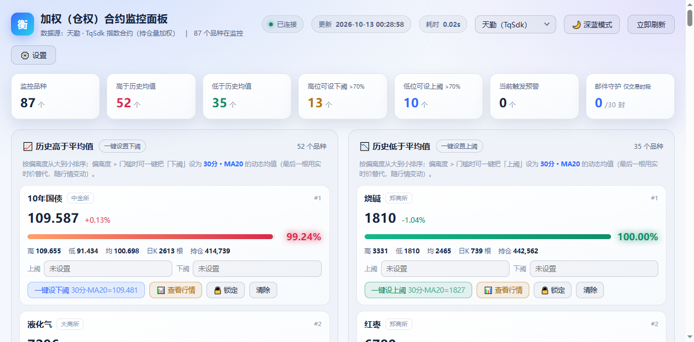
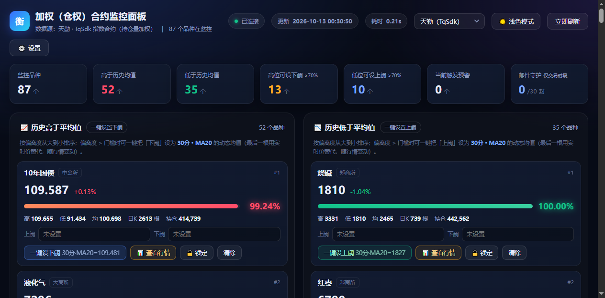
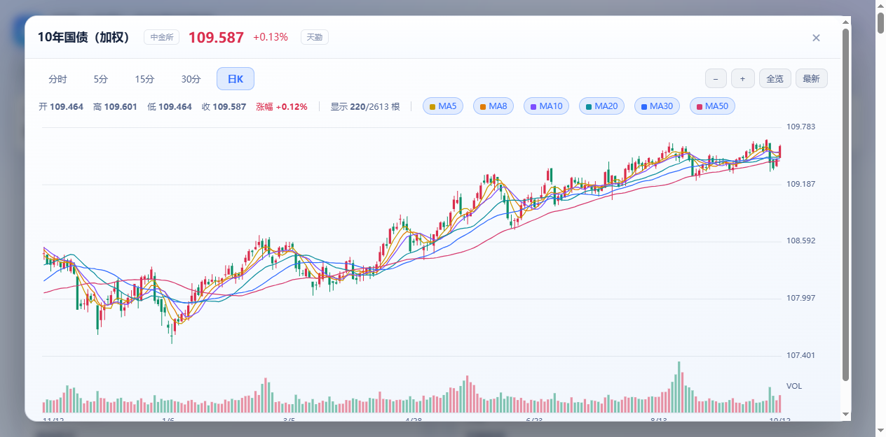
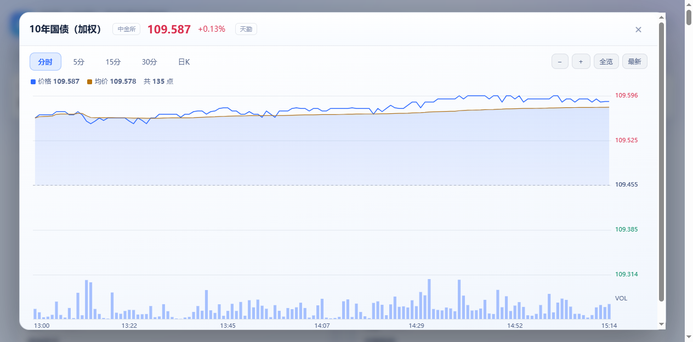
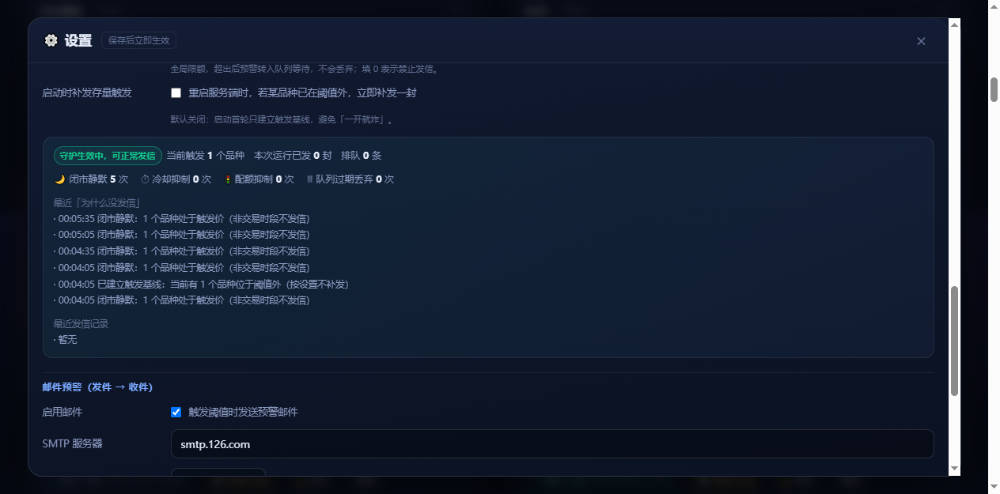
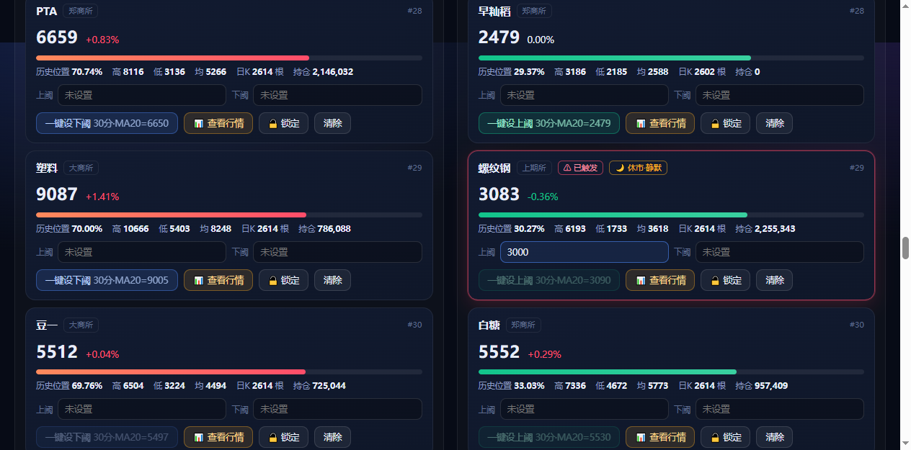

用加权（持仓量加权）合约数据，一屏监控全市场 88 个期货品种相对历史均价的偏离度； 偏离越极端越靠前，一键把阈值设到该周期的动态均线，越界即刻预警并邮件推送 —— 内置五层防轰炸守护。
GitHub 仓库内以 HTML 形式提供，可直接在线浏览
围绕「找极端、设阈值、盯突破」这条主线
以历史均价为 0 基准，高低两侧各自归一化到 100%，越极端越靠前。
把上/下阈直接设成所选周期 MA 的动态均值（最后一根用实时价替代，每个 tick 都在变）。
一次取回该周期全部 K 线，本地切片缩放平移，滚轮到任意位置都不再请求。
2 秒一档实时价驱动主面板；图表最后一根 K 线用实时价重绘。
顶栏下拉即切曲合 ↔ 天勤，切换后历史 H/L/M 自动按新源重算。
边沿触发＋滞回复位＋交易时段门禁＋冷却＋全局配额，一天不再 720 封。
浅色（默认）与深蓝一键互切，Canvas 图表配色同步切换。
PyInstaller 打包，内置 tqsdk / pandas / numpy / scipy，拷到任意目录即可运行。
浅色为默认主题，深蓝一键切换






三种方式，任选其一
默认 8689 端口，可自定义。
python 服务端.py --port 8689
python 服务端.py --no-browserERR_CONNECTION_REFUSED；顶部「更新 / 耗时」随后自动补齐。同为持仓量加权口径，可按需切换 · 查看完整数据源说明 →
| 数据源 | 账号 | 加权口径 | 品种数 | 日K 回溯 | 分钟K 上限 | 特点 |
|---|---|---|---|---|---|---|
| 曲合网（金投网） | 免账号 | JO_xxxxxx 加权合约 | 88（有行情 82） | 约 3.5 年 | 单次 500 根 | 秒开、无会话问题 |
| 天勤 TqSdk | 需快期账号 | KQ.i@交易所.品种 指数合约 | 87 | 2016 年起（10 年+） | 4000 根 | 历史深、推送式实时 |